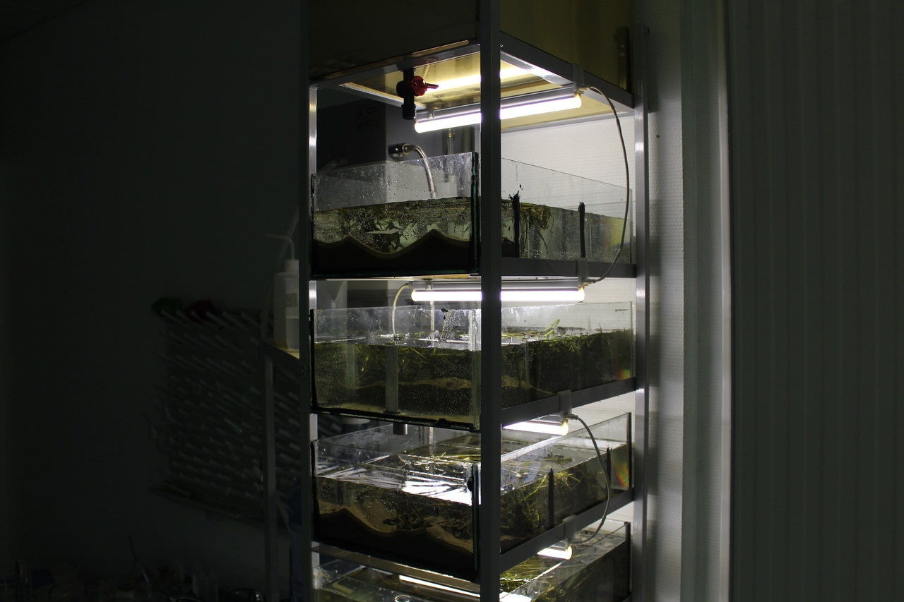
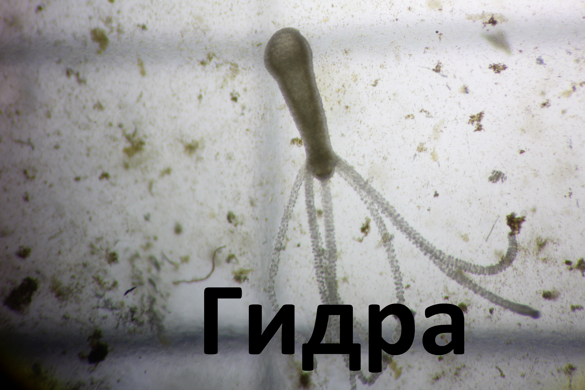

Наши первые исследования в области экологии реки Волга
На базе детского технопарка Кванториум Тольятти мы создали модель Волжского бассейна. Она выглядит как конструкция, состоящая из нескольких ярусов, на каждом из которых располагаются ёмкость с волжской водой, а также с волжским грунтом, водорослями и другими организмами. Наш эксперимент начался с того, что мы привезли с реки Волги грунт и воду; Далее день за днем, постепенно нарастала биомасса: то есть различные одноклеточные и многоклеточные водоросли, улитки, мелкие ракообразные и т.п.
С недавнего времени мы начали серию экспериментов: в чашку Петри с проделанными в ней отверстиями вставляются колпачки, в них заливается питательная среда и далее исследуемое вещество. Мы исследовали два вещества - Cucl2 и нефть. Нефть-это биогенное вещество, то есть которое способствует росту различных организмов, а Cucl2 - вещество ядовитое для многих обитателей. На чашке Петри с нефтью образовалось множество микроорганизмов. К ним относятся различные инфузории-туфельки и сувойки, черви которые относятся к разным классам : плоские черви, например планарии, олигохеты - малощетинковые черви, круглые черви - нематоды.
Также там развивались плесневые грибы и одноклеточные водоросли и небольшие раки, наподобие циклопов. Чашка Петри, в которой содержался хлорид меди всё произошло совсем иначе: на ней вообще не образовалась никаких организмов, но с обратной стороны чашки Петри прикрепились гидры - это кишечнополостные животные. Далее гидры расселились по всему аквариуму и прикрепились к чашкам Петри с нефтью но всё-таки хлорид меди они обходили стороной, и если прикреплялись, то только с обратной стороны чашки. Это свидетельствует о том, что хлорид меди- это ядовитое вещество, выброс которого может негативно повлиять на обитателей реки Волги. Далее мы планируем провести очень большую серию экспериментов.
Мы будем продолжать изучать биогенные и ядовитые вещества и смотреть как они влияют на организмы. Данные эксперименты мы проводим для того, чтобы у нас была информация о том, какие вещества выбрасываются в реку Волгу и почему именно они опасны, как именно они воздействуют на обитателей Волжского бассейна. Например если это вещество биогенное, и наоборот помогает развиваться организмам, то это не значит, что оно не вредит Волге. Например если в воду попали удобрения, то начинают расти и размножаться сине-зелёные водоросли, которые в последствии могут нанести вред организмам в реке Волге, так как они перекрывают кислород, из-за чего начнут погибать рыбы, раки и другие речные животные.
И главное, всё только начинается :)